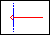
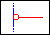
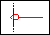
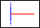
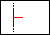
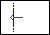
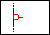
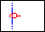
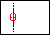
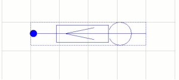

When you create a new part, the part editor opens with an empty, rectangular visible part outline (the part-body border) visible. The part body border expands to accommodate the graphic elements of the part body, and pins are constrained to the part-body border.
If you want to change the size or shape of the part-body border, you can select the border and drag the selection handles until the part-body border appears as you want it.
Pins, when you place them, are constrained to the part-body border. If the edge of the part-body coincides with this border, the pins are directly attached to the part-body, but if the part-body is inside this border, you must draw a line from the pin to the part-body. You may place individual pins, or you may place an array of pins.
You define the part-body using the tools available on the tool palette. All of these tools are also available on the Place menu. Using the Selection tool, you can select a placed object for editing.
|
|
You can draw part bodies thicker than pins and the rest of the part by adjusting the line style for the graphic objects you want to be thicker. |
When you place a pin, you can describe it completely. To
place pins, you need to be in the Part view of the part
editor.
If you want to place several identical pins that are not
sequentially numbered on the part-body border, the Pin tool
is ideal. See To place an
array of pins section, if you wish to
create multiple identical pins that are numbered
sequentially on the part body border.
When you place a pin in one view (normal or convert), Capture places an identical pin in the other view to prevent the parts from getting out of sync. The same is true about deleting pins. Changing the name of a pin in one view doesn't cause the name to change in the other. However, if you change a pin number in one view, Capture changes the pin number in the other view so the two views stay in sync.
If the part you are creating includes a series of pins that vary only in pin number, placing a pin array is very convenient. A pin array is defined by a single set of electrical characteristics. This tool is ideal if you wish to create multiple pins with identical properties and place them so that the pin numbers and names are sequentially arranged on the part body border, this tool is ideal.
Both homogeneous and heterogeneous parts may have shared
pins. A common use of shared pins is for supply (power or
ground) pins, which are referred to in Capture as
"power pins."
On heterogeneous parts, power pins can be visible on every
part in the package. If the pins are visible, they must be
placed on at least one part in the package, and that part
must be placed in the design for the power connections to
appear in the netlist. Invisible power pin types must also
be in a part that is placed in the design for them to
appear in a netlist.
On homogeneous parts, power pins appear on every part in the package. The pin names are filled in automatically, but you must specify the pin numbers. For the pins to be shared, verify that both the pin names and pin numbers are the same for every part in the package.
|
|
|
You may have comment text, in the font of your choice, on a schematic page or a part. Use the text tool to document your schematic folder or to place the logic definition for a programmable logic device.
At certain zoom scales, Capture substitutes text that is too small to appear with filled rectangles.. These placeholders are only for display—the text prints correctly.
Before you begin drawing, you may want to specify default line and fill styles because all lines and shapes you draw adopt the current line style, and closed shapes adopt the current fill style. You can use a variety of line types or fill styles for any schematic page or part.
To change the snap-to-grid option
-
From the Options menu, choose the
Preferences command, then choose the .
You set the option separately for the schematic page editor and the part editor.
To set a default line style
- From the Options menu, choose the Preferences command and then choose the .
-
Click on the Line Style and Width drop-down list
to display the options.
Note that you can specify separate options for the schematic page editor and the part editor. -
Select one of the options and click OK.
Any lines or shapes you draw will have this line style.
To define a default fill:
- From the Options menu, choose the Preferences command and then choose the .
-
Click on the Fill Style drop-down list to
display the options.
Note that you can specify separate options for the schematic page editor and the part editor. -
Select one of the options and click OK.
Any closed shapes you draw will have this fill style.
To create the part body you use the drawing objects in the Place menu (or the Draw toolbar). These include line, polyline, rectangle, arcs.
Notice that when you are in the Part editor, most of the options on the Place menu are disabled.
To draw an object:
- From the Place menu, choose the appropriate drawing command or select the appropriate drawing command from the Draw toolbar.
-
Use the mouse to draw the object.
To constrain the object by the orthogonality rules, press and hold theSHIFTkey while you draw.
To edit line style or fill style of a placed object
- Select the object.
- From the Edit menu, choose the .
- Select another line style or fill style in the dialog box that appears, then click OK.
To add comment text to a part or a schematic page:
- From the Place menu, choose Text.
- Enter the text in the dialog box that appears.
- Complete the dialog box selections; you can specify the font, color, or rotation.
- Click OK to dismiss the dialog box. A rectangle representing the text is attached to the pointer.
- Use the mouse to move the text.
- Click to place the text at the desired location.
|
|
|
Shortcut
Tool palette: 
To edit text display properties:
- Select the text.
- From the Edit menu, choose the Properties command.
- In the dialog box that appears, change the font, color, or rotation, then click OK.
Shortcut
Mouse: Double-click the text to edit.
To place a pin:
- From the Place menu, choose Pin. The Place Pin dialog box appears.
-
Edit the values as necessary.
Name The name can be up to 128 characters long and may include any character. If you place multiple copies of the pin and the name ends with a numeric component, that final numeric component increments by one with each successive pin you place.
Note: If you are using Capture design with PCB Editor, make sure that the pin names do not exceed 255 characters.Number The number can be up to 128 characters long and may include any character. If you place multiple copies of the pin and the number ends with a numeric component, the final numeric component increments by one with each successive pin you place. Shape Select one; the choices are CLOCK, DOT, DOT CLOCK, LINE, SHORT, SHORT CLOCK, SHORT DOT, SHORT DOT CLOCK and ZERO LENGTH. If you select a pin type of POWER, the pin shape is set to ZERO LENGTH automatically.
Note: You can also specify a user-defined pin shape if the pin shape is available in the CAPSYM.OLB library.Type Select one; the choices are 3STATE, BIDIRECTIONAL, INPUT, OPEN COLLECTOR, OPEN EMITTER, OUTPUT, PASSIVE, and POWER. The Design Rules Check tool uses pin type to check electrical rules. Width Select Scalar or Bus. If you choose Bus, the pin name must be of the form basename[m..n] where m..n specifies a range of decimal integers representing the number of bus members. For more information, see Naming Conventions. Visibility If you are placing a power pin, you can select the Pin Visible box to cause the pin to cancel the pin's global attribute. This is useful if you want to create an isolated power net. If a power pin is visible, it must be connected to a wire. For more information see About power and ground pins or Isolating power or ground.
Some netlist formats do not accept certain characters in pin names. See the description for the netlist format you want to use.
-
When you have defined the pin, click OK.
The pin appears attached to the periphery of the part. -
Use the mouse to move the pin to its intended location
and click to place it.
The pin appears in the selection color until you move the pointer. -
If you want to place additional pins, repeat step
1-4.
As you place successive pins, any final numeric component of the pin name or pin number increases by one. - If you need to edit pin properties, leave the pin selected, then from the Edit menu choose Properties, make the changes in the Pin Properties dialog box, then click OK.
-
When the pins are placed, select the selection tool, or
press
ESCto dismiss the pin tool. - If the part body does not coincide with the part-body border, draw a line from the pin's connection point to the part body. You may need to temporarily turn off the Snap to grid option (Options menu - Preferences command - Grid Display tab) while you draw the line.
If you want an overbar over a signal name, follow each
character in the name with a
backslash (\).
You can edit every pin in the package using the Package Properties spreadsheet editor. For more information, see Using the spreadsheet editor.
You may want to use the Pin Array tool for placing large numbers of pins even though the properties or pin numbers vary. After placing the pins, you can select those you want to change, then from the Edit menu, choose Properties; this brings up the spreadsheet editor in which you can edit the properties of many pins.
You cannot move pin names or pin number text when you are
creating or editing a part, but you can make all the pin
names on a part invisible. In the part editor, double-click
within the part editor, but not on any graphic element, to
bring up the Edit Part dialog box. Change Pin
Names Visible from True to
False.
Shortcut
Tool palette: 
To place an array of pins
- Verify that you are in the Part view of the part editor.
-
From the Place menu, choose Pin
Array.
The Place Pin Array dialog box appears. -
Edit the values as necessary.
Starting name The starting name can be up to 128 characters long and may include any character. The leftmost or upper pin of the array is assigned the starting name. If the starting name ends with a numeric component, that component increments by the increment amount from top to bottom and from left to right. Starting number The starting number can be up to 128 characters long and may include any character. The leftmost or upper pin of the array is assigned the starting number. If the final component of the starting number is numeric, the pin numbers change by the increment amount from top to bottom and from left to right. Number of pins An integer Increment A positive or negative integer. Pin names and pin numbers that end with a numeric component are affected by the increment value. The numeric portion of the pin name or pin number changes by this amount from top to bottom or from left to right. Pin spacing A positive value. The distance between the pins is measured in grid units. Shape Select one; the choices are CLOCK, DOT, DOT CLOCK, LINE, SHORT, ZERO LENGTH. If you select a pin type of POWER, the pin shape automatically is set to ZERO LENGTH. Type Select one; the choices are 3STATE, BIDIRECTIONAL, INPUT, OPEN COLLECTOR, OPEN EMITTER, OUTPUT, PASSIVE, POWER. Pin type is used by the Design Rules Check tool to check electrical rules.
Note: Some netlist formats do not accept certain characters in pin names. See the description for the netlist format you want to use. - When you have completely defined the array, click OK. The array is attached to the periphery of the part; the part body border automatically increases in size if necessary.
- Use the mouse to move the array to its intended location and click to place it. The array appears in the selection color until you move the pointer.
- Select the selection tool to dismiss the pin tool.
- If the part body does not coincide with the part body border, draw a line from the pins' connection points to the part body. You may need to temporarily turn off the Snap to grid option (Options menu, Preferences command, Grid Display tab) while you draw the lines.
Shortcut
Tool palette: 
To connect a pin to a non-rectangular part body:
- Place the pin on the part body border.
- From the Options menu, choose Preferences, then choose the Grid Display tab.
- In the Part and Symbol Editor group box, disable the Cursor Snap to Grid option, then click OK.
- Draw a line between the pin and the part body.
- If the line does not look like the pin, edit the line's style and width.
- From the Options menu, choose Preferences, then choose the Grid Display tab.
- In the Part and Symbol Editor group box, enable the Cursor Snap to Grid option, then click OK.
|
|
The size of a part or a symbol is limited to 32 by 32 inches. |
Pin Shapes
When you place pins on a part body, you can specify the shapes of the pins. You can use the predefined System-Defined Pin shapes or you can create your own Pin Shape.
System-Defined Pin shapes
Capture provides a list of system-defined pin shapes that you can use when you create a new part or edit the pins shapes on an existing part.
|
 |
Clock |
|
 |
Dot |
|
 |
Dot-Clock |
|
 |
Line |
|
 |
Short |
|
 |
Short Clock |
|
 |
Short Dot |
|
 |
Short
Dot-Clock |
|
 |
Zero length |
User-Defined Pin Shapes
You can create your own pin shapes in Capture. You can then use these pin shapes on new or existing parts.
To create a pin shape:
-
Open the
CAPSYM.OLBlibrary from the following installation path:%CDSROOT%\tools\capture\library\capsym.olb.
(see Opening a library) -
Select the library (
capsym.olb) in the Project manager and choose Design - New Symbol.
OR
Right-click on the library (.olb) and choose New Symbol from the shortcut menu. -
Enter a name for the new pin shape.
A symbol name length cannot exceed 31 characters. -
Choose the Pin Shape option in the
Symbol type group and click OK.
The Part Editor page opens with an empty rectangle defining the boundary of the pin shape. -
Draw the pin shape using the available shapes on the
Draw toolbar.
The new pin shape is now available in the selected library.
You can now use this pin shape by placing it on a part (see To place a pin section).
When Creating User-Defined pin shapes:
-
-
You can choose Line, Arc, Polyline, Bezier curve,
Rectangle, Ellipse, Elliptical arc shapes to create a
user-defined pin shape around a dot connection
point.

- The bounding box of the pin shape determines the length of the pin. If the bounding box does not completely enclose the graphics then you may see your pin offset from the boundary of the symbol. For a correct adjustment, ensure the bounding box completely encloses the graphics.
- The Capture Part and Schematic Page editors require a dot connection point to be on the grid so for the pin start point to touch the body of the symbol, you must keep the end points on the grid.
- You should not draw objects enclosing the dot connection point. That may not show the pin shape correctly on the Capture Part and Schematic Page editor.
- IEEE symbols and pictures are not supported in user-defined pin shapes.
-
You can choose Line, Arc, Polyline, Bezier curve,
Rectangle, Ellipse, Elliptical arc shapes to create a
user-defined pin shape around a dot connection
point.
When Adding User-Defined pin shapes to parts in your designs:
-
To place a user-defined pin shape on a part, the pin
shape must be available in the
CAPSYM.OLBlibrary in the path%CDSROOT%\tools\capture\library\capsym.olb.
If you create your pin shape in a user-defined library, you need to copy that symbol into theCAPSYM.OLBlibrary.
Capture reads the user-defined pin shapes from thise location and populates the pin shape names in the Shape cell of the Pin Properties dialog in Part Editor. - If you place a new part in a design that has pin shapes assigned to pins, Capture will search for the pin shapes in the CAPSYM.OLB library. When the part is placed on the design and the pin shapes are found in the CAPSYM.OLB library, the pin shapes are cached to the design cache. Once you save the design, the pin-shapes will be read from the design cache.
- If a pin shape is not available in the CAPSYM.OLB library, the default pin shape, which is a line, will display on the part.
- If you downgrade a design containing user-defined pin shapes from any Capture version greater than 16.2 to 16.2 or any previous version, the user-defined pin shapes will be removed from the design cache. You can still open the design in 16.2 but the pins will show with default pin shape, line. However, if you reopen this 16.2 design in any version greater than 16.2, Capture will seach the CAPSYM.OLB library for the user-defined pin shapes used in the design. The pin shapes found in the library will display on the schematic. For pin shapes not found in the library, the default, line, and shape, will display.
- If you run the Replace cache command on a user-defined pin shape, say, A with B in the design, all instances of the user-defined pin shape A will be replaced with B in the design, and the Pin Shape property on the pins will be updated to the new pin shape value. This property is an instance override. At any time, if you want to revert to the library-level pin shape value, you can use the Delete property in the Property editor and it will delete the instance override and this will be reflected on the schematic. However, if you do an Edit part, then it will still show the part level user-defined pin shape and not the instance override that exists in the schematic.
P in types
|
3 State |
A 3-state pin has three possible states: low, high, and high impedance. When it is in its high impedance state, a 3-state pin looks like an open circuit. For example, the 74LS373 latch has 3-state pins. |
|
Bidirectional |
A bidirectional pin is either an input or an output pin. For example, pin 2 on the 74LS245 bus transceiver is a bidirectional pin. The value at pin 1 (an input) determines the active type of pin 2, as well as others. |
|
Input |
An input pin is one to which you apply a signal. For example, pins 1 and 2 on the 74LS00 NAND gate are input pins. |
|
Open Collector |
An open collector gate omits the collector pull-up. Use an open collector to make "wired-OR" connections between the collectors of several gates and to connect with a single pull-up resistor. For example, pin 1 on the 74LS01 NAND gate is an open collector gate. |
|
Open Emitter |
An open emitter gate omits the emitter pull-down. The proper resistance is added externally. ECL logic uses an open emitter gate and is analogous to an open collector gate. For example, the MC10100 has an open emitter gate. |
|
Output |
An output pin is one to which the part applies a signal. For example, pin 3 on the 74LS00 NAND gate is an output. |
|
Passive |
A passive pin is typically connected to a passive device. A passive device does not have a source of energy. For example, a resistor lead is a passive pin. |
|
Power |
A power pin expects either a supply voltage or ground. For example, on the 74LS00 NAND gate, pin 14 is VCC and pin 7 is GND. It is not a good idea to use overbars above power pin names; if you do, any netlists that you create will have invalid power pin names. Power pins are invisible. |